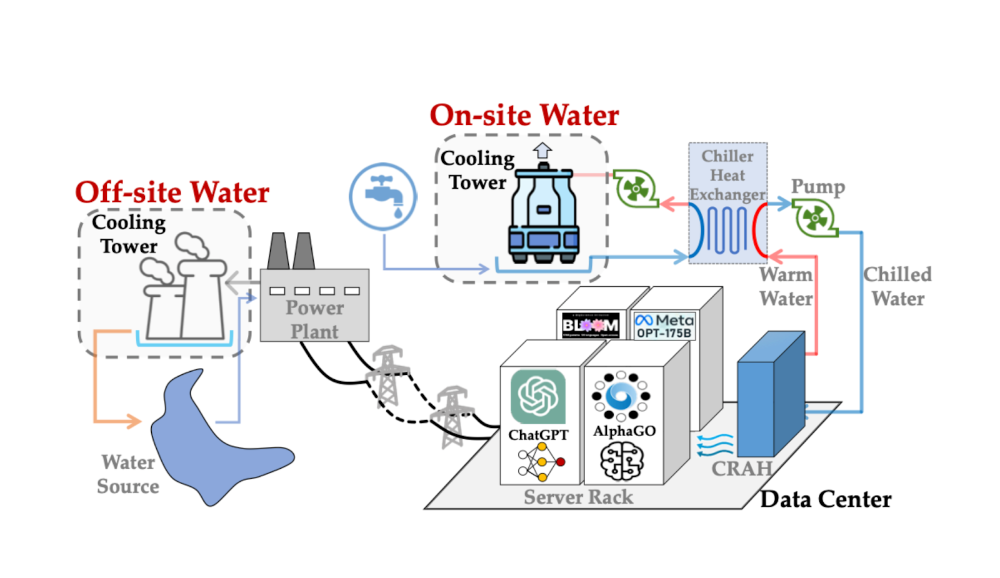
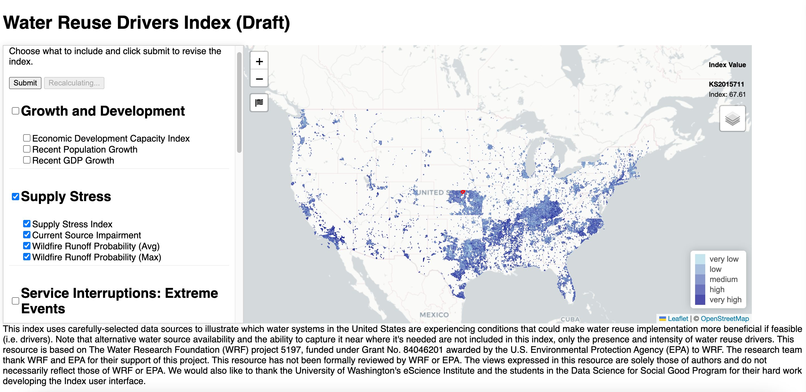
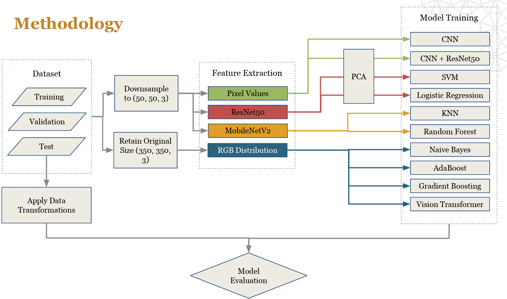
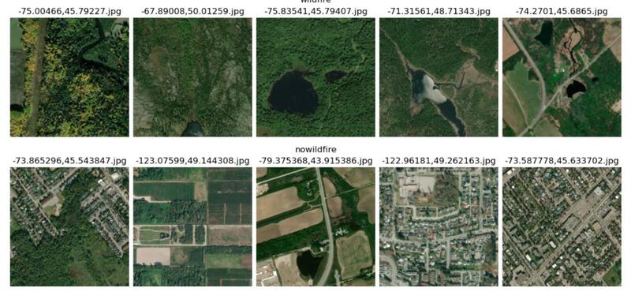
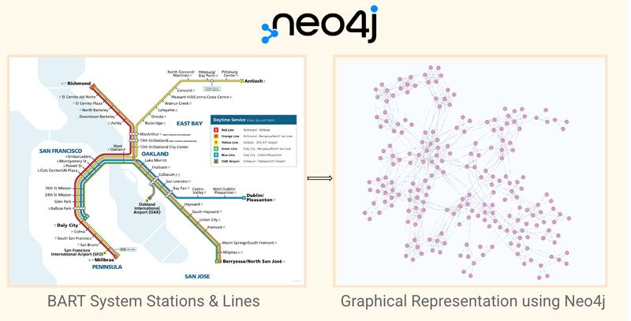
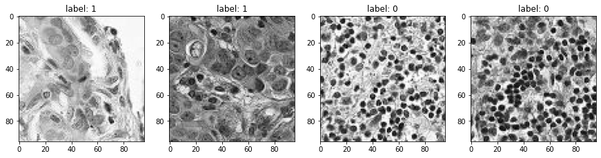
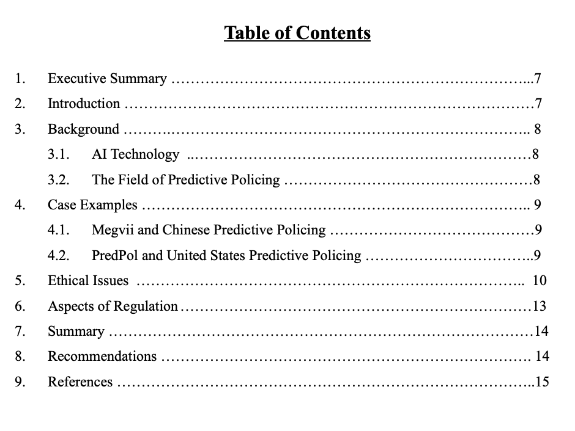

Portfolio
From-scratch portfolio with HTML, JavaScript & CSS.
Stack: GitHub Pages · Claude Code · HTML/CSS/JavaScript
From-scratch portfolio with HTML, JavaScript & CSS.
Stack: GitHub Pages · Claude Code · HTML/CSS/JavaScript
Asparagopsis is a red seaweed that, when fed to cattle in small doses, dramatically reduces their methane emissions. This paper consolidates results from dozens of individual trials into dose-response models. This work directly supports regulatory approval pathways and carbon credit methodologies for the livestock industry.
Forecasting Water Usage Efficiency in Data Centers. In 2023, American data centers collectively consumed about 300,000 gallons of water per day, roughly equal to 100,000 homes. More than 20% of them withdrew water from medium to high stress watersheds. With AI driving a projected compound annual growth rate of 22% in global DC capacity, water requirements will strictly increase.

We developed HydroScale, a platform providing granular 72-hour ahead WUE (Water Usage Effectiveness) forecasts across the United States. Leveraging weather, energy, and operational data, it delivers on-site forecasts tailored to individual data centers and off-site forecasts considering broader regional factors, such as geospatial estimates of where water usage will be most efficient to enable geographic load balancing and job scheduling.

Tags: Python · Data Engineering · Machine Learning · GIS · Transfer Learning
Open-source GIS tool for environmental indices. Water reuse, defined by the EPA as "the practice of reclaiming water from a variety of sources, treating it, and reusing it for beneficial purposes," is too often seen only as a solution for water-scarce areas, rather than for its full potential, including lowering flood risk, reducing sewer overflows, and minimizing nutrient discharge.
geondxr is a low-code R tool that uses WebR to run index re-calculation and interactive mapping directly in the user's browser — no server needed, free to host on GitHub Pages. Index creators use our open source R project to preprocess data, calculate the index, and ship it as a single .html file.

Tags: R · GIS · Statistics · Web Dev · Visualization
Since the 1980s, wildfires have intensified due to climate change, posing significant threats to ecosystems and economies. Early wildfire risk assessment is crucial for resource allocation, prevention, and disaster response. By analyzing aerial photos, ML models can assess wildfire risk to aid proactive measures like vegetation management.

Augmented the public dataset of Canadian pre-wildfire and no-wildfire labelled aerial images to build a classification system. Trained and compared several supervised deep learning models against classical methods on unseen test data to assess wildfire prediction accuracy.

Tags: Computer Vision · Python · Machine Learning · Remote Sensing · Transfer Learning
End-to-end data engineering project for a subscription-based meal delivery service. Worked in AWS (VM + Docker cluster with Anaconda and Postgres containers). Transformed and analyzed data using Pandas and SQL. Created an interactive geographic heat map of customer locations and optimal storefront locations using Google Maps and Python.

Tags: Data Engineering · SQL · Python · GIS
Given vast numbers of histopathological images and diminishing medical staff worldwide, can neural networks reliably detect cancer and be integrated into radiologists' workflow? This project tests a CNN on a binary classification task on labelled images.

Implemented a two-layer CNN (16 and 32 filters, kernel size 5) with two fully-connected layers in PyTorch. Optimized with SGD and cross-entropy loss over 50 epochs.
Tags: Machine Learning · Computer Vision · Python · Deep Learning
This report focuses on predictive policing, the practice of using algorithms to anticipate criminal activity before it occurs. Two case studies: U.S. company PredPol and Chinese company Megvii. Each illustrates the ethical issues, public reception, and government regulation involved.

The report highlights how rapidly developing technical approaches have outpaced government regulation, and explores the social implications of increasingly technocratic law enforcement. Written for regulators exploring how cases have unfolded in two countries with contrasting ethical and regulatory standards.
Tags: Research · Writing · Policy and Regulation · Governance · Machine Learning
Certain facets of human geography, such as migration, lack of social organization, and environmental degradation are known to contribute to infectious disease prevalence. Yet Western public health instead looks towards medical intervention and disease-specific prevention to address the resulting epidemics after they have already spiralled out of control.
The prioritization of downstream interventions stems in part from the imperial legacy of "tropical medicine," a medical speciality that originated as an arm of the British Empire whose purpose was to control diseases that inhibited expansion and productivity in their overseas extraction colonies. While today global health organizations tout the "human right to health," the economic metrics they use to quantify the potential impact of aid severely undermine the humanitarian sentiment.
This paper argues that the roots of the technology-based global health approach to malaria control today can be found in the British imperial legacy in Latin America and the Caribbean — a legacy that persists despite recent advances towards reducing the threat of malaria in the region.
Tags: Research · Writing · Public Health · Epidemiology · Policy and Regulation
"The Effect of Methyl Mercury Poisoning Due to Fish Consumption on Neurodevelopment of Children."
First synthesized in a London laboratory in the 1860s, methyl mercury has remained over-abundant in the environment due to chemical manufacturing and power plant byproducts. Mercury bioaccumulates easily from microorganisms to large mammals. In populations that consume fish frequently, most daily mercury intake is in the methyl mercury form.
This paper covers exposure assessment, toxicology, epidemiology (including the Minamata and Iraqi poisoning outbreaks), and risk management through the Minamata Convention, Clean Air Act, Clean Water Act, and EPA emission standards.
Tags: Public Health · Policy and Regulation · Writing · Research · Epidemiology
The Winery Definition Ordinance of 1990 amended Napa County Code to establish the "75% rule" (at least 75% locally grown grapes), set minimum parcel size requirements for new wineries, and aim to "reduce densities and thereby lessen local visual, traffic, air, noise, and groundwater impacts and reduce the conversion of viable agricultural land."
In this analysis, I apply supply and demand elasticity models to illustrate the dynamic between agricultural businesses and other potential land buyers. Because the government restricts land access through permits, land is both excludable and rival. I also examine how the ordinance shifted the market from near-perfect competition toward an oligopolistic structure, which raised prices, reduced output, and pushed out small independent producers.
One key limitation: the negative externality model fails to account for harms from agriculture itself (e.g. soil erosion and pesticide pollution). The ordinance addresses urban and industrial development impacts but overlooks those from agricultural production.
Tags: Policy and Regulation · Writing · Research